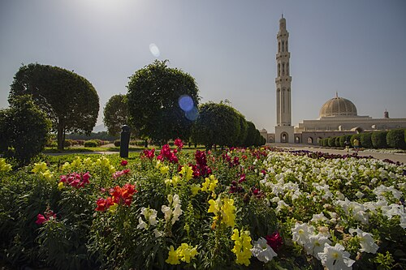
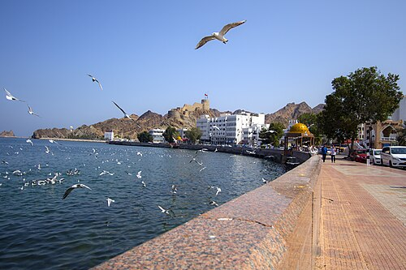
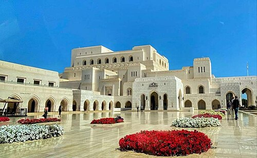

This map shows 11 of the most-searched sights in Muscat as photo spots, ranked by how often people search for them: Sultan Qaboos Mosque, Muttrah Souq, Royal Opera House, Al Alam Palace and Muttrah Fort lead the list. Every spot has a pin on the subject and a phone icon showing where to stand, with tips for shooting it on your phone: which lens to use, how to frame it, a settings tip and the best time of day. Directions and Navigate buttons take you to the standing point on foot or by public transport. 3 spots are free to view; the full map is for members.
The 3 free photo spots
1Sultan Qaboos Grand Mosque

The Sultan Qaboos Grand Mosque is the largest mosque in Oman. It was finished in 2001 and can hold up to 20,000 worshippers across its prayer halls, courtyards and passageways. It was inaugurated on 4 May 2001, thirty years into Sultan Qaboos's reign. It was built from about 270,000 tonnes of imported Indian sandstone.
For a phone photo, the outer marble courtyard is the place to start. From there the central dome and the tallest minaret can sit in one frame, with plenty of bright sky above. The main minaret is 90 metres high and the four flanking minarets are 45.5 metres, so the skyline has a pleasing rhythm of tall and short towers. The long pools give a second classic picture, with the dome and minarets reflected and the full façade in one frame. A third option is the road, Sultan Qaboos Street, which gives a complete exterior view that the public entrance by the parking does not.
Keep your photos respectful. Leave worshippers out of the frame and avoid prayer times. The mosque is closed to visitors on Fridays and public holidays, so plan your day around that. Large tripods and drones are typically restricted, so check the current rules on the day. You will not need a tripod anyway, because a phone braced against a wall or held with both hands is fine in daylight.
Where it is: In the Bawshar area of Muscat, on Sultan Qaboos Street (some maps place it in Al Ghubrah). It sits in its own large grounds with a public entrance beside the parking.
Shooting it on your phone
Lens: Start with the default lens (1x) for the dome and tallest minaret together. Switch to ultra-wide (0.5x) for the pools and the full façade, and use telephoto (2x-5x, depending on your phone) for the dome and minaret detail.
Where to stand: Stand right at the subject: the phone icon on the map marks the spot. From here the central dome and the tallest minaret rise together above the courtyard, framed against the bright sky.
Framing: Turn on gridlines and place the dome and main minaret on one of the vertical lines, with the marble courtyard filling the lower third. Keep the phone level so the towers do not lean. For a different view, the long pools show the dome and minarets reflected with the whole façade in one frame, and Sultan Qaboos Street gives a full exterior view from the road, but use that roadside stop with care.
Settings tip: Tap the sky near the dome to set focus, then drag the exposure slider down a little so the bright sky stays blue and the stonework keeps its detail. Live Photos is useful for capturing a moment without worshippers in the frame.
Best time: Visit outside Fridays and public holidays, when the mosque is closed to visitors, and avoid prayer times. Morning or late afternoon usually gives softer light on the stone.
2Muttrah Souq

Muttrah Souq is the old market of narrow, shaded lanes beside Muttrah's harbour, and the Corniche entrance is the best way to start photographing it. Locals call it Al Dhalam, meaning "darkness", because its crowded stalls and narrow lanes keep the sun out during the day. It is one of the oldest marketplaces in Oman, around two hundred years old, and it once did a great deal of trade in the age of sail. The market was originally built from mud and palm leaves, and the Muscat Municipality has since renovated and redecorated it.
The domed, arched gateway is the picture to take first. It has an ornate design, and the Corniche and the harbour sit behind it. Inside, the lanes are dim and busy. You will find silver, white dishdashas, embroidered kumahs, bright cloth, incense and spices, and the smell of frankincense and perfume oils carries a long way. These make good close-up subjects: a stall front, a hanging lantern or a pile of colourful scarves.
Go early in the morning if you can. The entrance lanes get crowded in the afternoon and evening, and the market is busiest of all around Eid. If you want a wider view, the Muttrah Fort looks down over the souq roofs, the harbour and the curve of the Corniche. Riyam Park gives you the incense burner monument with the waterfront behind it, but that is a backdrop rather than a view of the souq itself.
Where it is: Muttrah Souq is in Muttrah, the old harbour district of Muscat, right beside the harbour and the Corniche. The gateway photographed here is on the Corniche side.
Shooting it on your phone
Lens: Start with the ultra-wide (0.5x) to fit the whole gateway with the Corniche and harbour around it. Switch to the default lens (1x) for a cleaner, less stretched view. Use telephoto (2x-5x) for details on the arch and for stall goods.
Where to stand: Stand right at the subject (Corniche entrance, opposite the pedestrian traffic lights). The domed, arched gateway into the souq, framed by the Corniche and the harbour behind it.
Framing: Turn on gridlines and keep the gateway centred, holding the phone level so the arch does not lean. Wait for a gap in the pedestrians if you want a clean shot, or keep a few people in to show scale. For a higher view, the Muttrah Fort looks over the souq roofs and harbour, and it is worth checking its access first.
Settings tip: Tap the brightest part of the gateway, then drag the exposure slider down a little so the sky and arch keep their detail. Inside the shaded lanes, tap on a stall to focus and raise the exposure slightly, or try night mode if the phone offers it. Hold the phone still for a moment while it works.
Best time: Early morning, before the crowds build up and while the light is good on the gateway's detail.
3Royal Opera House Muscat

The Royal Opera House Muscat is Oman's main venue for opera, orchestral music and ballet. It opened on 12 October 2011 with a production of Turandot. The building is in contemporary Omani style, with a white marble and pink limestone facade and entrance arches. It sits behind formal landscaped gardens and a paved plaza, and holds up to 1,100 people. The complex also has a concert theatre, a cultural market and an art centre. Sultan Qaboos ordered it built in 2001.
It photographs well because of its scale and its lighting. A close-up from the forecourt cannot show the whole building, but stepping back along the street gives a wider view of its size and its night lights. For this spot the suggested view is from Al Kharijiyah Street, which is the building's street address. In daylight the pale facade is easy to read against the sky. After dark the lit building stands out against the dark. If you want other angles, the plaza in front shows the full facade and entrance arches. The gardens let you frame the building through date palms, water features and walkways, and are usually quieter. Keep your photos to the outside. Photography inside the auditorium is restricted, and tours only allow it in certain areas.
Where it is: The opera house is in the Shati Al-Qurm district of Muscat, on Sultan Qaboos Street, with its street address on Al Kharijiyah Street.
Shooting it on your phone
Lens: Start with the telephoto (2x-5x, depending on your phone) and use the longest zoom your phone gives cleanly. The default lens (1x) will show the building as a tiny shape in the distance, and the ultra-wide (0.5x) is not useful from here.
Where to stand: Stand on Al Kharijiyah Street (a stretch of the street some distance from the building, for a wider angle). The building set back along the street, giving a wider view that takes in its scale and the night lighting. From this distance the building will look fairly small, so think of it as a distant view rather than a close portrait.
Framing: Turn on the gridlines and keep the building on one of the upper lines, with the street or open space leading towards it. Check the vertical edges of the building are straight so it doesn't lean. If you want a bigger, clearer view, the plaza in front gives the full facade and entrance arches. The gardens give a quieter shot through the date palms.
Settings tip: Tap the building to focus, then slide the exposure down a little so the lights don't burn out. After dark, use night mode and hold the phone steady, for example braced against a wall or post, for the few seconds it needs.
Best time: At night, when the building is lit.
8 more spots for members
These spots are on the map as grey numbered pins. Where to stand, the phone tips, photos and directions for them come with Explorer membership.
- 4Al Alam Palace · members
- 5Muttrah Fort · members
- 6Bait Al Zubair · members
- 7National Museum of Oman · members
- 8Al-Mirani Fort · members
- 9Al Jalali Fort · members
- 10Riyam Incense Burner · members
- 11Muscat Gate Museum · members
Get every spot with Explorer membership
Explorer opens every spot on every map in the library: where to stand, how to frame it on your phone and how to get there, plus the Xdatrys Maps app with maps saved on your phone for use without signal. $9.99 a month or $59.99 a year; cancel any time.
Join Explorer Compare free and Explorer
Not ready to join?
Get Pocket Lens, our free daily smartphone travel photography newsletter.
Free, and you can unsubscribe at any time. If the form does not show, sign up on our newsletter page.
Questions
What are the top photo spots in Muscat?
The first three on this map are Sultan Qaboos Mosque, Muttrah Souq and Royal Opera House. They are ranked by how often people search for them. The full map has 11.
Where should I stand to photograph Sultan Qaboos Mosque?
Stand right at Sultan Qaboos Mosque: the phone icon on the map marks the spot. Start with the default lens (1x) for the dome and tallest minaret together.
When is the best time to photograph Muttrah Souq?
Early morning, before the crowds build up and while the light is good on the gateway's detail.
How do I get to the Royal Opera House?
No station or stop is given for this spot, so the easiest way is by taxi from Shati Al-Qurm, the district the opera house is in.
Credits
Map data © OpenStreetMap contributors (ODbL); base map built with Protomaps from OpenStreetMap data. Photos from Wikimedia Commons, credited under each photo with their licence. Background reading for the free spots: Sultan Qaboos Grand Mosque, Muttrah, Royal Opera House Muscat (Wikipedia, CC BY-SA). Access rules and opening times change: check before you go.